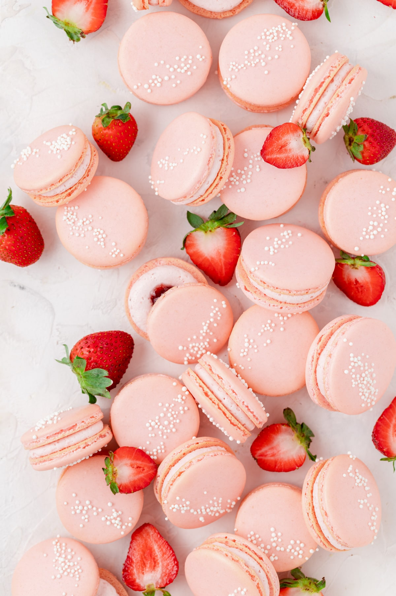

Strawberry French Macarons
Click Here!

The best recipe you will ever make!
I'll walk you through how to make homemade French macarons and give you all my tips and tricks for success! You only need a few simple ingredients to make these delicious strawberry macarons!
Ingredients
- Egg Whites
- Almond Flour
- Powdered sugar
- Granulated sugar
- Cream of tartar
- Pink gel Food coloring
- Non-pareil sprinkles
Steps: Once your ready lets get baking!
- Weigh out 100 grams of egg whites into a small bowl
- Sift together almond flour and powdered sugar into a large bowl and set aside.
- In a stand mixer fitted with the whisk attachment, whisk the egg whites on medium speed until they become foamy, then add in the cream of tartar.
- Turn the mixer up to medium-high and gradually add in the granulated sugar. Once all the sugar is added, turn the mixer to the highest setting and whisk on high until soft peaks form.
- If desired, add in 1-2 drops of pink food coloring. Then continue to whisk on high until stiff peaks form.
Using a spatula, gently fold in half of the dry ingredient mixture until fully combined. Then gently fold in the remaining dry ingredients.
- Continue to gently fold the batter until it reaches a “flowing lava” consistency. You should be able to make a “figure 8” with the batter before it breaks. As soon as you reach this consistency, stop mixing! If you over-mix the batter, the macarons won’t rise properly in the oven.
- Line a large baking sheet with a silicone mat or parchment paper.
Scoop batter into a large piping bag fitted with a large round tip. Hold the piping bag perpendicular to the silicone mat and pipe 1 inch rounds.
Pick up the baking sheet and drop it onto the counter 3-4 times to help bring any air bubbles to the surface of the macarons. Then use a toothpick to pop any visible air bubbles to make a smooth surface.
- If desired sprinkle a few nonpareils on top!
- Let the macarons sit at room temperature for 30-40 minutes or until a skin forms on the surface. You should be able to lightly touch the surface without any batter being disturbed.
While the macarons are resting, preheat the oven to 300°F. Bake one sheet at a time on the center rack of the oven for 13-15 minutes or when they do not move on their “feet” when touched.
Let the macarons cool completely on the baking sheet before removing them. They should easily peel off when fully cooled.
- Fill the inside with whatever filling your heart desires!